Chrome插件修改教程
目录：
☺准备工作
因为很多人需要，而且没有在吾i 破解 论坛都没有找到
那就我来抛砖引玉吧。
☺需要使用的工具
- 脑子。
当然不是说大脑，是思维。
举个例子吧，之前有人问我，为什么把支付失败的字符串改成支付成功后，
只弹出成功，没有效果。。。这个问题比较深奥，我无法解释。（当时我就说我不会。） 正确的上网方式（非必须）你改插件，总不能改二手的吧。。。
js，HTML(H5)，CSS基础(*)这些很重要！巧妇难为无米之炊，万丈高楼平地起，离不开。。。
吾爱。
咳咳- 习惯用的编辑器。
一个好的编辑器可以让你
事半功倍
当然理论上notepad也成，就是太费眼。
这里我推荐的两款是notepad++和sublime
咳咳，至于前者，本来挺喜欢的（只对软件本身），后来事情发生了就果断卸载。。。
如果你确定满足并且想一起研究的话，就继续吧。
正式开始。
☺插件安装与提取
☺从谷歌商店提取
因为我是Chrome的用户（曾经的某6某忠实粉丝hhh劝退）
理论上Chromium内核的浏览器插件修改起来应该都差不多吧。
目标：Octotree
官网：octotree.ioChrome插件下载地址（谷歌商店）：链接太长。。点我访问
☺下载&安装
谷歌商店一键安装。
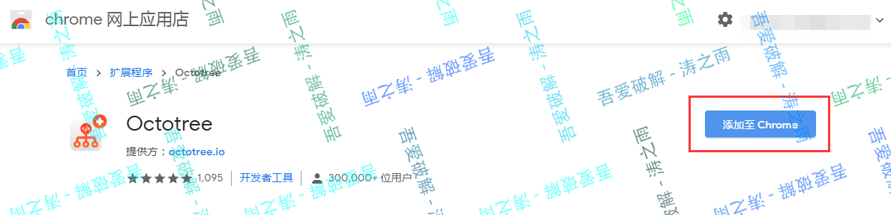
安装
安装完成（感觉这几张都是废图。。。）
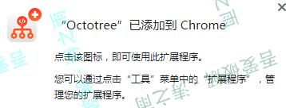
☺提取插件安装包
chrome://extensions/管理页面中，查看刚才安装后的插件的ID
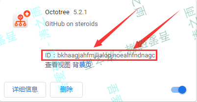
如图所示，本例的ID是bkhaagjahfmjljalopjnoealnfndnagc（只需要看首尾就足够了。）
好吧，我不知道Chrome下载的crx文件。。。放在哪里（可能是安装后自动删掉了？）
有知道的朋友可以回复告知一下。
访问chrome://version
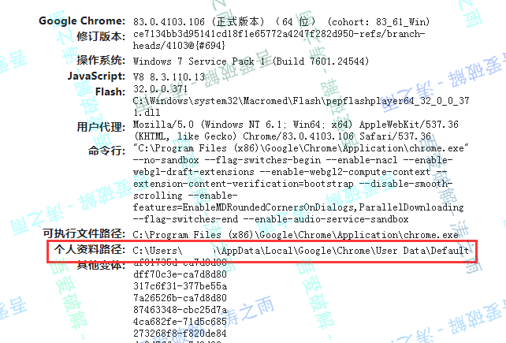
找到个人资料路径，计算机里打开路径。
插件所在文件夹在Chrome资料文件夹下的Extensions文件夹
比如本例：
看首几位为：bkha
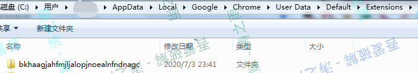
找到插件文件夹了。
打开该文件夹，
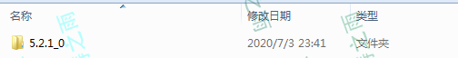
里面这个版本号所在的文件夹才是真正的插件文件夹（插件是需要打包才能成为crx文件的，本质上就是有经过签名压缩文件，后面会说怎么签名打包）
复制这个版本号文件夹出来。
☺直接下载crx
有些浏览器或某些插件可以直接下载到crx或未封装的插件
下载后直接解压就好。
☺注意事项！！！
注意！和爆破exe一样！最重要的就是勤备份！
注意！和爆破exe一样！最重要的就是勤备份！
注意！和爆破exe一样！最重要的就是勤备份！
不然一失足成千古恨。。。
☺修改–解锁高级功能
获取到目标文件的解压文件就可以开始着手了
推荐的参考
☺分析区别
破解功能自然是因为功能上有差异。找到这个差异。
比如
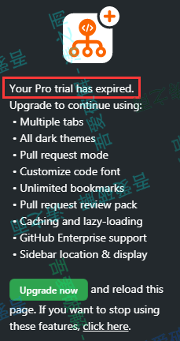
试用会员过期提示升级的提示（源码里称之为
广告）
或是
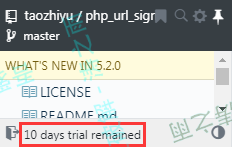
剩余会员试用时间的显示
亦或是
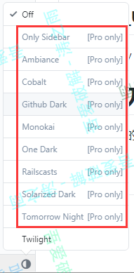
仅会员可以使用的提示。
当然还有很多情况，比如只有会员才会显示的按钮（官方示意图可能会有关键词）
☺定位判断代码及修改
推荐notepad++和sublime之一的原因就是他们支持文件夹中搜索关键词（好吧，everything好像也可以，不过那不是编辑器。。）
例如试用会员还剩多长时间过期的提示
关键词：remained，文件夹内搜索，发现只有content.js里有。
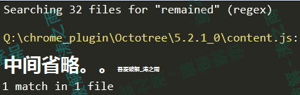
打开继续搜索
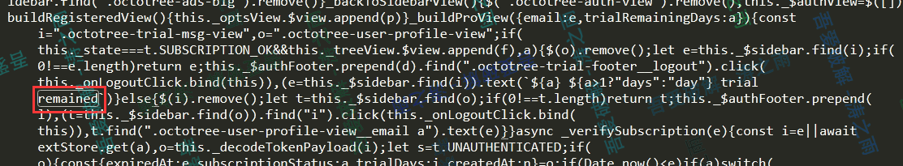
发现只有一处（巧了，看一下前后文，应该是的day(s)也有了）
向前找判断
这里因为打包的时候压缩了，建议在新窗口美化一下（当然也可以直接修改。或是直接保存美化后的代码。个人喜欢原汁原味）
当然有些lj网站美化后的代码会出现问题。。比如
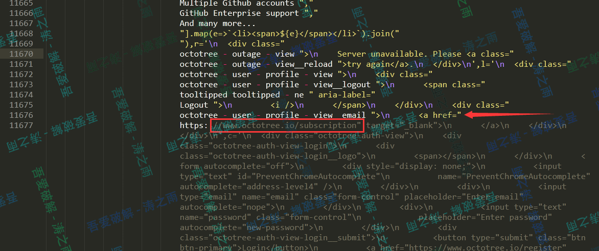
这样。
因为瞎换行，把人家的字符串给拆了。。。
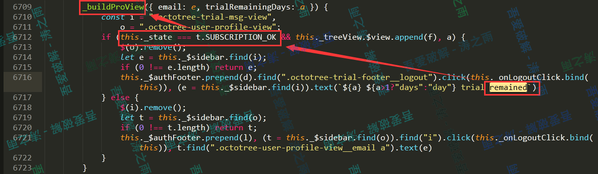
格式化后看起来就很（相对）清爽了。
一个方法，里面是判断。
根据判断找到this._state === t.SUBSCRIPTION_OK
此处其实可以使用全局替换，把this._state === t.SUBSCRIPTION_OK改成true。
此处选择方法分析，尽可能少改动。
搜索调用（这个没有混淆，很方便找。如果混淆了一般都会动态调试，下面有动态调试的方法，可以参考一下）
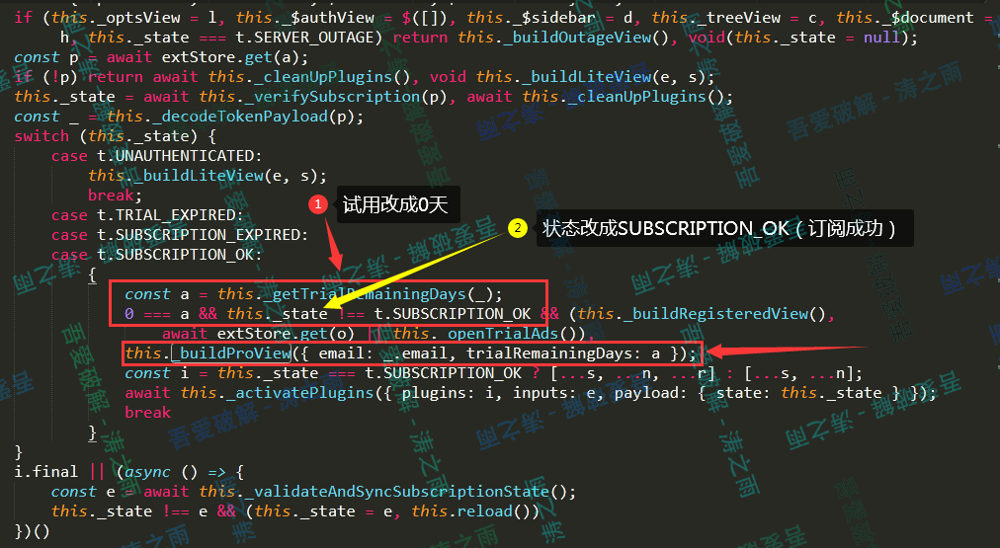
这里一样，因为很轻松就能知道SUBSCRIPTION_OK、SUBSCRIPTION_EXPIRED、TRIAL_EXPIRED是什么意思，直接改就行了。如果混淆了，需要动态调试。
搜索后得知_getTrialRemainingDays只有一处调用，因此直接赋值就好，不会有问题。
1 | const a = this._getTrialRemainingDays(_); |
改成
1 | const a = 0;//此处改成0（试用剩余0天,试用期间有购买Pro的广告） |
接着是改this._state，因为多次调用该代码，因此溯源。找this._state赋值的位置。
就在上面一行（格式化后的）
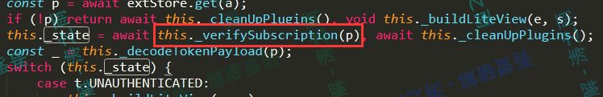
1 | async _verifySubscription(e) { |
老规矩，可以把判断改掉。
我这里把除了SUBSCRIPTION_OK的赋值全都改了。
1 | async _verifySubscription(e) { |
当然全都删掉然后改成
1 | return t.SUBSCRIPTION_OK |
也是可以的。
我个人习惯基于原代码修改。
☺测试是否成功
把上面的代码在原文件里对应修改。
保存后点击
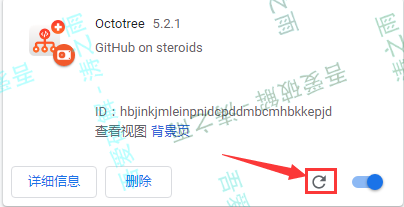
重新加载插件就修改完成了。
这里是成功破解了高级功能。
如果不成功返回继续
如果报错见出现错误的处理方法
☺修改–汉化
☺分类
上一次修改的时候对代码进行了汉化，这次也不例外。
汉化的情况有多重。
- 语言是写死的（类似这次，是只有单一语言的）
- 有多重语言包可以选择，就是没有中国的（差评）
- 有
中文的选项，但是只有部分是汉语，而且还有好多是错的。
一般来说，1是因为没做多语言配置，在js里直接修改就好2相对来说好改一点，找到语言包，修改就行（一般是json文件或是js内的json，且多为谷歌语言包，在插件目录下的_locales文件夹下，有对应语言的语言包）3一般和2情况类似，补充翻译即可。（推荐BCompare 4，对比很方便，其他某插件的示意图如下图）
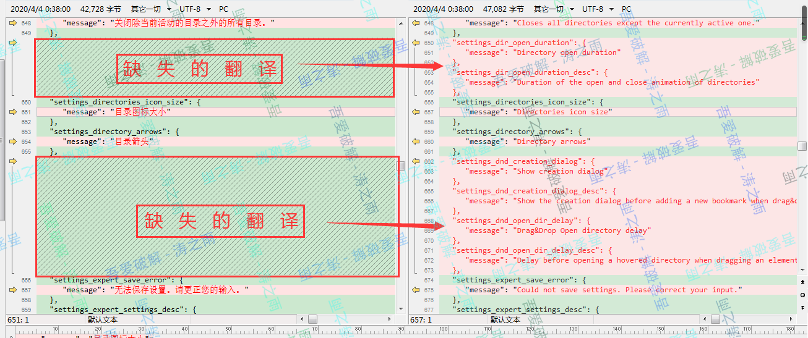
本插件是最不方便修改的写死在js里的类型。一般需要所见即需译，就是看到需要翻译的，就去翻译，而且翻译的过程最好从特征词句到一般词语。
有强烈特征的一句话或是一个不常见的单词先翻译。比如settings，一般只要有设置的插件里会反复出现。这就不好定位了。
☺例子一：汉化提示语并自定义
举个例子
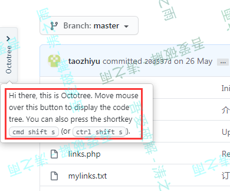
第一次安装完后打开会有如下提示，一句话，就很方便搜索到
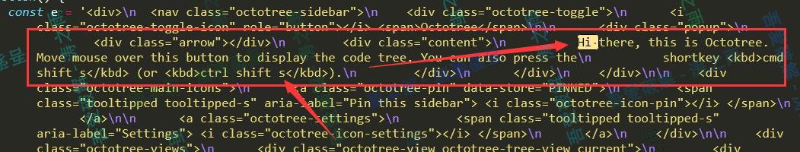
那就直接修改好了。注意不要修改到关键词，或是其他代码，或是单双引号，亦或是%1、$1、{1}这类的替换字符。
翻译替换进去就行，这里我选择谷歌翻译，可能是日常习惯用谷歌搜索吧，而且比较喜欢Material Design风格吧。
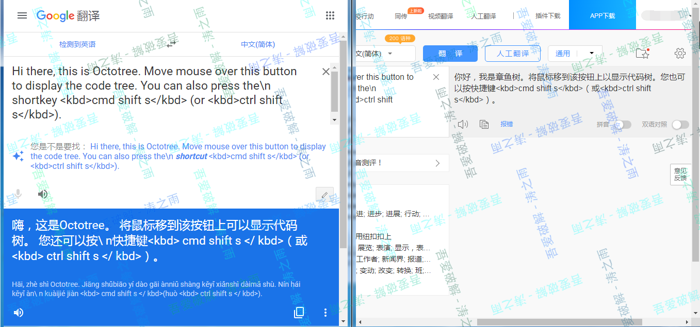
虽然都是简单的句子，我还是选择机译+校准。因为打字没有复制粘贴快（所以码教程是最痛苦的，不接受反驳）
当然，你也可以随手扔一个“版权”之类的。。。虽然破解版只是技术的产物，是没有版权可验的。
修改完：
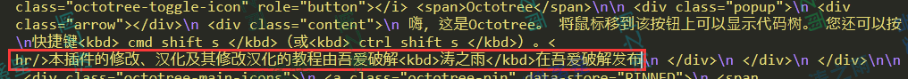
效果图：

☺例子二：汉化部分设置
再举个例子
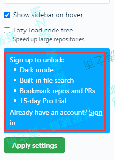
因为我刚才卸载了，提示我要登录。
改之，老规矩，搜索上面的关键词unlock:
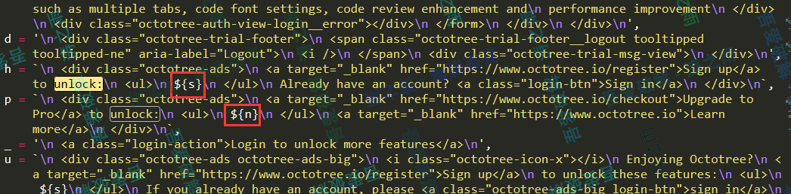
搜索后发现并没有解锁的列表，在${s}和${n}里。
向上翻一下，找到了该列表。
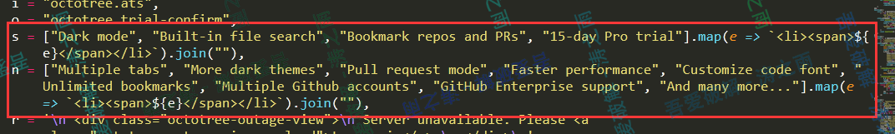
既然是破解版，那就可以随心所欲的翻译了。。。比如我是这么做的
对应的代码部分：
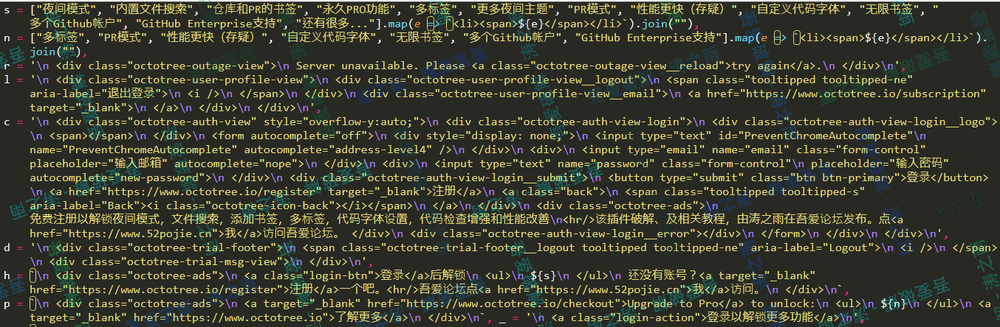
☺例子三：重复部分汉化
汉化Settings设置的标题部分。有很多搜索项
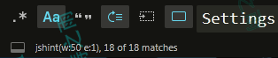
可以
勾选
Aa区分大小写。使用正则表达式，排除前后没有的字符比如使用
1
\WSettings\W
匹配前后都是非字母和数字的
Settings
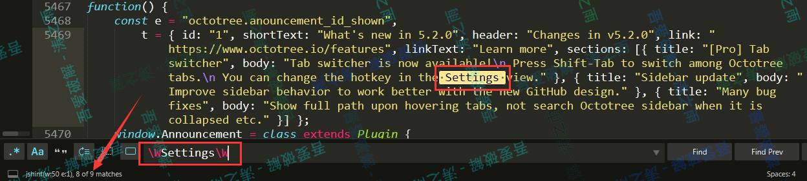(这9处除了一个夜间模式匹配字符的正则表达式，其余的都是要汉化的)
审查元素，找到前后文（包括
类名、ID）
比如
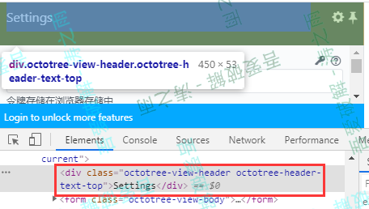很方便就可以精准定位到汉化的位置。
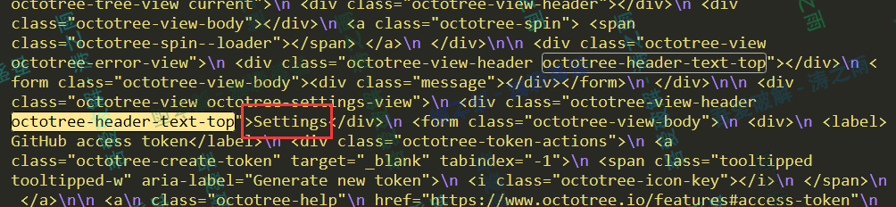
☺其他汉化例子展示
请下载插件（同时提供了修改后的和未修改的版本）
☺修改–布局
布局一般修改是CSS，JS甚至HTML，因此要都有所了解。
☺给作者填坑
老bug了。。无法滚动的bug修复了，但是界面还是不正常（左侧多余，右侧溢出）
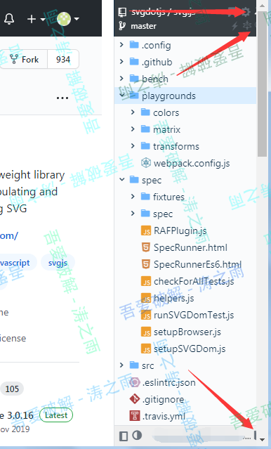
在Chrome的控制台里一通摸索(瞎改)，
一般为
CSS或CLASS的修改居多，需要有HTML、CSS等基础
发现是
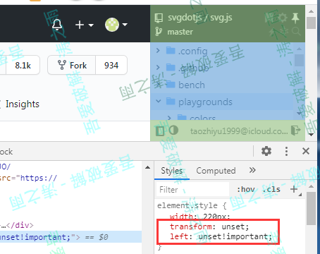
把transform和left属性强制删除，设置就行（unset）
在下面的class里找到设置右侧属性的类（本例中见下图）
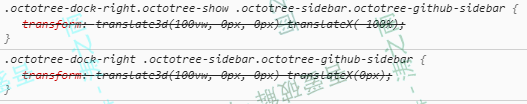
因为是!important强制属性，所以只需要改一个就行。
修改部分如图所示：
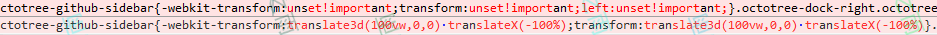
注：
- 改法不唯一，只要能实现目的，且简洁方便快捷实用，就是好方法。
- 本方法因为没有使用
transform属性，移动动画会丢失。
不想加animation动画，又没想到更好的方法。。。
凑活用吧，反正主要不是看动画的。
☺强迫症患者
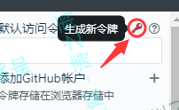
tip竟然出现在左边。。。
好难受看我改到下（上）面
分析class，tooltipped-w是左边显示，因此猜测w是指西边。
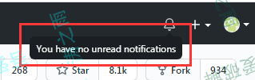
观察到上面Git部分有想要的样式，
同理，炮制出tooltipped-sw（西南），改动前后的对比
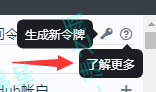
注：
Chrome在标签上右键Force State可以设置当前状态
改完代码发现在右侧的时候显示正常，但是左侧的时候就变了。
查看代码发现因为有页面方向的变换，对class进行了动态改变。
改js代码吧。给每一个加上单独的类（这里我使用的是tao）
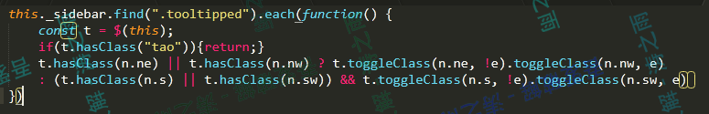
效果（注：图经过处理，为了方便看效果，部分间距增加了）
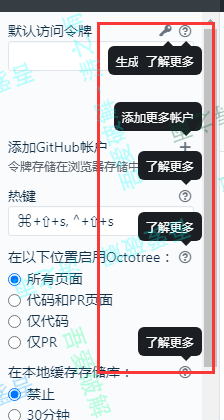
左右均正常。
☺其他修改（瞎改）
咳咳，反正html、css或js呗。
看着改好了。。。
☺修改–杂项
还有一些乱七八糟的东西可以修改，具体可以参考附录中的第二个教程
比如右键，第一个是官网。
可以点击后弹一个咱们的唔愛论坛官网，改改作者、简介啥的
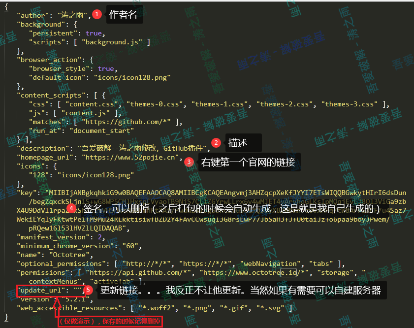
注！上述截图因为方便说名，仅把更新链接删掉了。真正操作的时候请删除
或是卸载后再弹一下5爱的官网（下图第一个框）
当然也可以像我上个版本一样，第一次安装的时候弹一下。
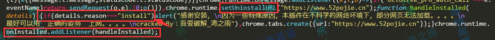
效果：
第一次安装有弹窗：
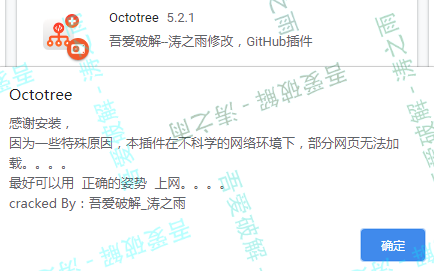
同时点击确定后有吾爱网站弹出
☺修改–动态调试
动态调试是最方便找到出问题的位置以及原因的办法（虽然不一定能想到怎么解决。比如下图）。
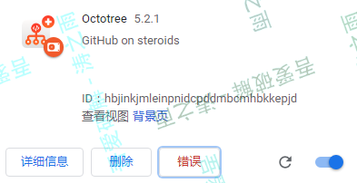
亦或是代码被混淆的很厉害，又抽取了结构，平流抽象化了（AST）
注：AST又被称为js预编译，可以参考这里的介绍
还是以Octotree为例
假如我故意（一不小心）出了一个未知错误。
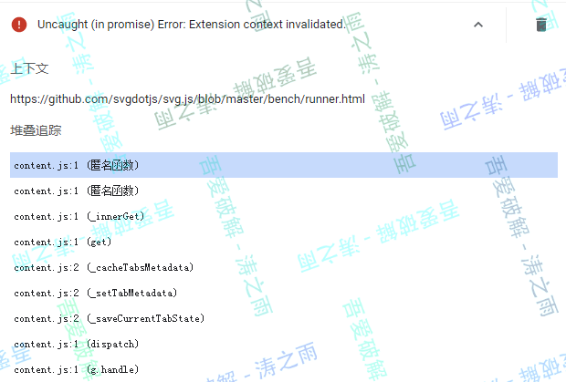
插件的错误也十分“委婉”，而且因为压缩了，不方便看错误位置。
动态调试吧。
这里要分情况查看。
☺popup（弹出页面）
就是点击插件的按钮，会有窗口弹出的。类似于下图的ADblock插件
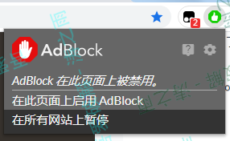
插件上右键-审查弹出窗口-(格式化)下断点-重新加载
注：重新加载可以在
console里输入
重新加载。
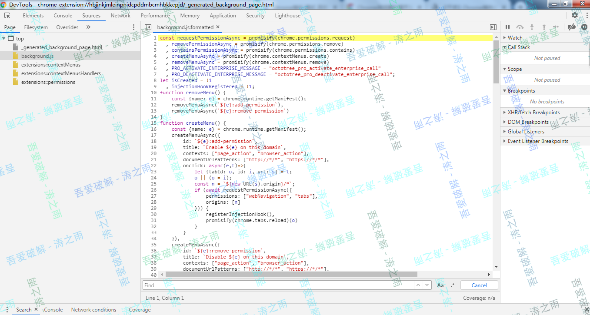
☺植入到页面的js
可以直接在console-Content Script-页面的位置（如果有iframe的话）-插件名中格式化，下断点等等。
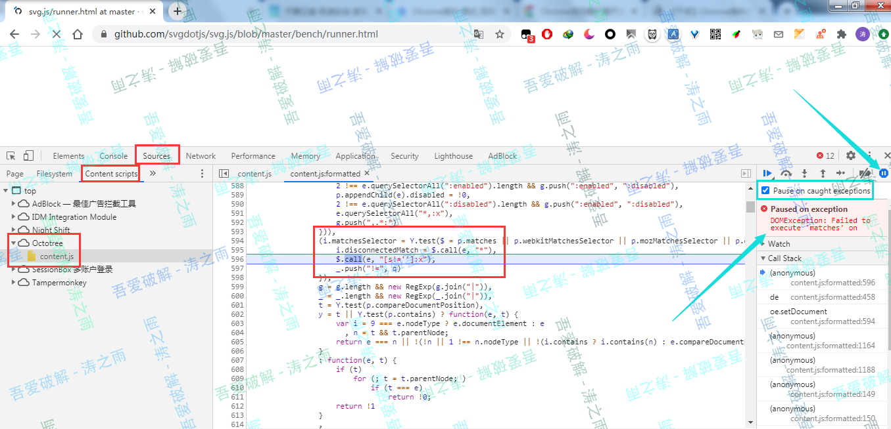
注：推荐一个我刚发现的功能（可能有朋友早就知道了了吧。。）
在上图蓝色箭头所示的方框的位置，是异常前下断点，
系统会在出现异常并且没有被捕捉的地方，在报错前断下。堆栈，数据都保存着，而且有报错的信息，可以方便调试。
☺出现错误的处理方法

最简单的办法就是：
一直撤销到不报错为止，然后重做。
如果不行的话，请退回到备份版本。
如果重复好几次，还是感觉没问题，就需要动态调试了（参上文）。
☺打包
该改的都改完了，该填的坑也都填好了。
需要打包发布了（如果有账号的话）
点击上方的“打包扩展程序”，输入扩展所在的文件夹
点击打包扩展程序即可。
至于私钥如果你不是第一次打包，上一次打包后会自动生成一个私钥。你可以用这个私钥重新打包（本质就类似安卓的签名）
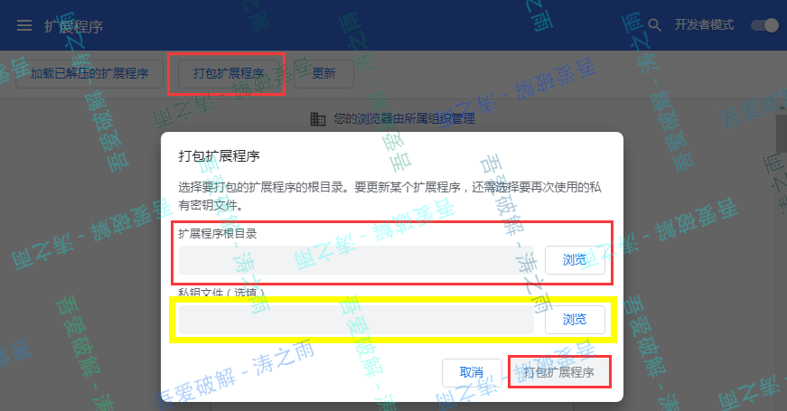
补充：
- 每个私钥都标志这一个独立的插件，如果不同的插件用同一个私钥签名，会导致覆盖。（惨痛教训）
- 因为Chrome的特性，无法直接安装没有在谷歌商店中发行的插件（除非签名经过官方许可，并且有第三方进行安装，比如下面的区别示意图）
如果是分享zip版未打包的插件，推荐先打包后再重命名。
这样可以保证插件数据不会丢失
更新的时候，因为有key系统会认为是在更新插件，不会导致多个版本共存
（5555我才知道，所以现在。。）
新版本旧版本共存了。。。也就是说旧版本的设置需要手动转移到新版本（气哭）
☺参考资料
有问题或是遇到奇怪的API可以查阅。
| 内容 | 链接 | 作用 |
|---|---|---|
| GitHub翻译版 | 点我 | 咳咳，不一定是最新的。 至少比英文原版方便吧 |
| 某网站分享的经验和教程 | 点我 | 偏实战吧，比较详细 （虽然是转的，但是原作者图片都没了） |
| 图灵的图书版 | 点我 | emmm没啥特别的 |
| 官方教程 | 点我 | 最权威的官方教程 （纯英语、 正确的上网方式警告） |
| 360汉化版(超级旧的版本) | 点我 | 旧版本，很多图都挂了 |
☺修改样本
原crx
Chrome插件下载地址（谷歌商店）：
链接太长。。点我访问
下载：
云盘：
189云盘：
https://cloud.189.cn/t/r2MJ3yaMVV3e
访问码：03ts
【原包】即为未修改版本，后缀改成zip即可
【样品】即为修改后的版本，后缀改成zip即可
【教程】为PDF教程，后缀改成pdf即可
【crx】为修改打包后的crx样本，后缀改成crx即可
蓝奏云：
样品：
https://www.lanzoux.com/ihR3eef0yyh
密码:ezpf原包（zip）
https://www.lanzoux.com/itEFfef0z3c
密码:b0ip本教程PDF
https://www.lanzoux.com/iOkeHef0zti
密码:c0cbCRX版样品
https://www.lanzoux.com/iAl1fef1c8f
密码:hhy6
小站：
样品：Octotree_cracked by 吾爱破解：涛之雨V5.2.1_0.zip
CRX版样品：Octotree_cracked by 吾爱破解：涛之雨V5.2.1.crx
原版zip：Octotree
本教程PDF（最后的下载部分有改动，未同步）download.pdf